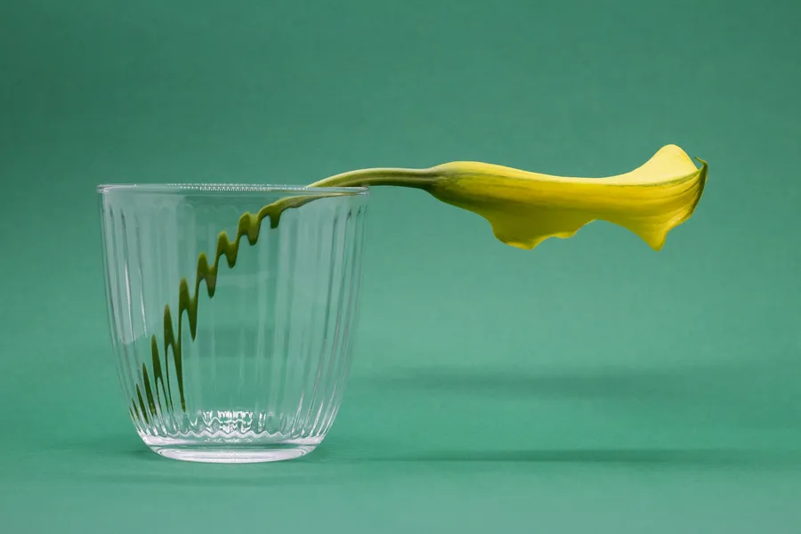

Strata · Moodboard in
Forma · calla.webp

#2E6C55Ground
#A7BBBCGlass
#3F541AStem
#4DA283Mist
#DCBC06Petal
#B8FF00Accent
Images · Palette pull/Five samples, five colours, one accent
Strata · Moodboard in
